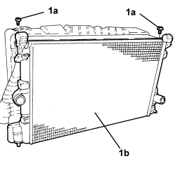
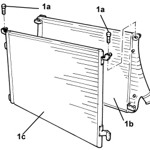
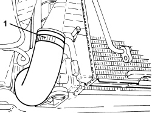
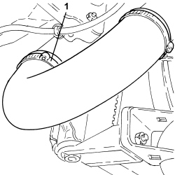
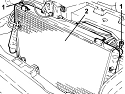

1048B50 TURBOCHARGER INTERCOOLER - R + R
- Path
- Procedures > 10 ENGINE > 1048 ENGINE AIR SUPPLY CIRCUIT > 1048B PRESSURE AIR CIRCUIT > 1048B50 TURBOCHARGER INTERCOOLER - R + R
- Kind
- repair procedure (removal / refitting; the operation number is the code)
- Applies to
- engines: 1.9 JTD 8v, 1.9 JTD 16v, 2.4 JTD 20v; all production periods
- Interactive page
- https://sloeber94.github.io/elrnDB-fCrm/en/#/194002164
Applies to: engines: 1.9 JTD 8v, 1.9 JTD 16v; all production periods
 Removing
Removing
 Refitting
Refitting- Position the vehicle on a lift.
Op. 1016A10 SOUND-PROOFING COVER - R.R
Op. 1048B19 TURBOCHARGER AIR OUTLET HOSE -R.R.
Op. 1048A42 SLEEVE FROM FLOW METER TO TURBO CHARGER AIR INLET PIPE - R + R
Op. 7055B54 UNDER ENGINE PROTECTION/GUARD - R.R.
Op. 1048B17 HEAT EXCHANGER AIR INLET HOSE - R.R.
Op. 7040D30 ENGINE BAY FRONT BEAM COVER - R R
Op. 1048B10 RIGID SUPPLY PIPE (ONE) BETWEEN TURBOCHARGER AND HEAT EXCHANGER -R.R.
Op. 0010T84 COOLANT FOR AIR CONDITIONING SYSTEM - DEHYDRATE AND REPRESSURIZE
Op. 5530B52 BATTERY SUPPORT/DRIP TRAY - R.R
Op. 1048B20 AIR SUPPLY HOSE FROM HEAT EXCHANGER TO RIGID PIPE - REPLACE
Op. 1064B42 SOLENOID CONTROLLING TURBOCHARGER VANE POSITION ACTUATOR - R.R
Op. 1088E11 FANS WITH SINGLE ENGINE DUCT - R+R
Op. 1088B20 ENGINE COOLING RADIATOR - R + R
1. Undo the bolts (1a) and remove the air duct (1b) from the supercharging air/air heat exchanger.

Applies to: engines: 1.9 JTD 8v, 1.9 JTD 16v; all production periods
1. Undo the bolts (1a) and release the supercharging air/air heat exchanger (1b) from the air conditioning condenser (1c).

Applies to: engines: 1.9 JTD 8v, 1.9 JTD 16v; all production periods
Refitting
Removing- Fasten the supercharging air/air heat exchanger to the air conditioning condenser and tighten the fixing bolts.
- Place the air duct in its housing on the supercharging air/air heat exchanger and secure it using the bolts.
Op. 1088B20 ENGINE COOLING RADIATOR - R + R
Op. 1088E11 FANS WITH SINGLE ENGINE DUCT - R+R
Op. 1064B42 SOLENOID CONTROLLING TURBOCHARGER VANE POSITION ACTUATOR - R.R
Op. 1048B20 AIR SUPPLY HOSE FROM HEAT EXCHANGER TO RIGID PIPE - REPLACE
Op. 5530B52 BATTERY SUPPORT/DRIP TRAY - R.R
Op. 0010T84 COOLANT FOR AIR CONDITIONING SYSTEM - DEHYDRATE AND REPRESSURIZE
Op. 1048B10 RIGID SUPPLY PIPE (ONE) BETWEEN TURBOCHARGER AND HEAT EXCHANGER -R.R.
Op. 7040D30 ENGINE BAY FRONT BEAM COVER - R R
Op. 1048B17 HEAT EXCHANGER AIR INLET HOSE - R.R.
Op. 1048A42 SLEEVE FROM FLOW METER TO TURBO CHARGER AIR INLET PIPE - R + R
Op. 1048B19 TURBOCHARGER AIR OUTLET HOSE -R.R.
Op. 1016A10 SOUND-PROOFING COVER - R.R
Op. 0010T20 ENGINE COOLANT - CHANGE
Op. 7055B54 UNDER ENGINE PROTECTION/GUARD - R.R.
- Remove the vehicle from the lift.
Applies to: engines: 2.4 JTD 20v; all production periods
Removing
Refitting- Position the vehicle on a lift.
- Make sure that the ignition key is in the OFF position, then disconnect the battery terminal (-).
Op. 0010T84 COOLANT FOR AIR CONDITIONING SYSTEM - DEHYDRATE AND REPRESSURIZE
Op. 7040D30 ENGINE BAY FRONT BEAM COVER - R R
Op. 7055B54 UNDER ENGINE PROTECTION/GUARD - R.R.
Op. 5040A40 AIR CONDITIONING CONDENSER - R+R
1. Loosen the band and disconnect the air supply hose between the turbocharger and the heat exchanger, heat exchanger side.

Applies to: engines: 2.4 JTD 20v; all production periods
1. Loosen the band and disconnect the air supply hose between the heat exchanger and the rigid pipe.

Applies to: engines: 2.4 JTD 20v; all production periods
1. Undo the upper bolts fixing the air/air heat exchanger.
2. Lift up and remove the supercharging air/air heat exchanger releasing it from the engine cooling radiator brackets.

Applies to: engines: 2.4 JTD 20v; all production periods
Refitting
Removing- Place the supercharging air/air heat exchanger in its housing securing it using the engine cooling radiator brackets.
- Tighten the upper bolts fixing the supercharging air/air heat exchanger.
- Connect the air supply hose from the heat exchanger to the rigid pipe and secure it using the band.
- Connect the air supply hose between the turbocharger and the heat exchanger, heat exchanger side, and tighten the band.
Op. 5040A40 AIR CONDITIONING CONDENSER - R+R
Op. 7055B54 UNDER ENGINE PROTECTION/GUARD - R.R.
Op. 7040D30 ENGINE BAY FRONT BEAM COVER - R R
Op. 0010T84 COOLANT FOR AIR CONDITIONING SYSTEM - DEHYDRATE AND REPRESSURIZE
- Connect the negative battery terminal.
- Remove the vehicle from the lift.
Topics linked from this page (17)
- 0010T20 ENGINE COOLANT - CHANGE
- 0010T84 COOLANT FOR AIR CONDITIONING SYSTEM - DEHYDRATE AND REPRESSURIZE
- 1016A10 SOUND-PROOFING COVER - R.R
- 1048A42 SLEEVE FROM FLOW METER TO TURBO CHARGER AIR INLET PIPE - R + R
- 1048B10 RIGID SUPPLY PIPE (ONE) BETWEEN TURBOCHARGER AND HEAT EXCHANGER -R.R.
- 1048B17 HEAT EXCHANGER AIR INLET HOSE - R.R.
- 1048B19 TURBOCHARGER AIR OUTLET HOSE -R.R.
- 1048B20 AIR SUPPLY HOSE FROM HEAT EXCHANGER TO RIGID PIPE - REPLACE
- 1064B42 SOLENOID CONTROLLING TURBOCHARGER VANE POSITION ACTUATOR - R.R
- 1088B20 ENGINE COOLING RADIATOR - R + R
- 1088E11 FANS WITH SINGLE ENGINE DUCT - R+R
- 5040A40 AIR CONDITIONING CONDENSER - R+R
- 5530B10 BATTERY - R+R
- 5530B52 BATTERY SUPPORT/DRIP TRAY - R.R
- 7040D30 ENGINE BAY FRONT BEAM COVER - R R
- 7055B54 UNDER ENGINE PROTECTION/GUARD - R.R.
- 7210E10 R.R. FRONT BUMPER